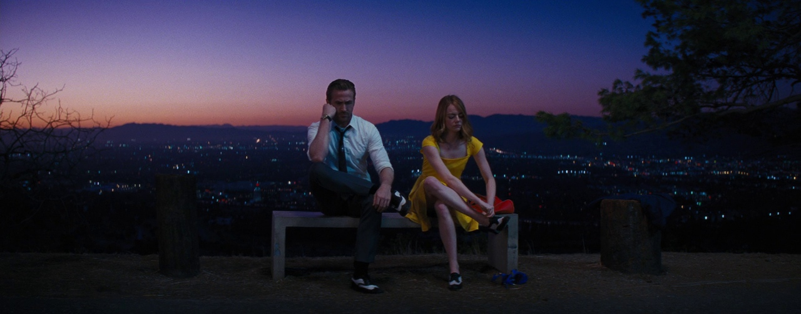
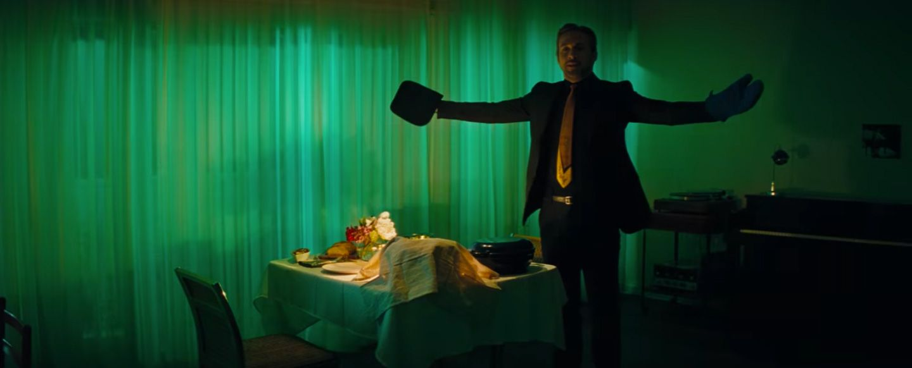
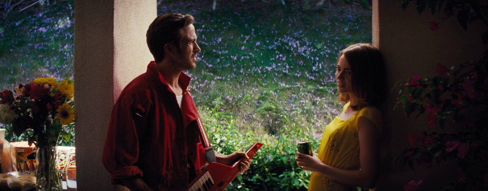

Criticism

Criticism
Critics praised the film's screenplay, direction, cinematography, acting, score, and the chemistry of Gosling and Stone.The review aggregator Rotten Tomatoes gives the film an approval rating of 91% based on 460 reviews, with an average rating of 8.7/10.
Cast

Cast
Ryan Gosling as Sebastian "Seb" Wilder
Emma Stone as Mia Dolan
John Legend as Keith
J. K. Simmons as Bill
Rosemarie DeWitt as Laura Wilder
Finn Wittrock as Greg
Callie Hernandez as Tracy
Sonoya Mizuno as Caitlin
Jessica Rothe as Alexis
Tom Everett Scott as David
Josh Pence as Josh
Meagen Fay as Mia's Mom
Plots
Plots
While stuck in Los Angeles traffic, aspiring actress Mia Dolan has a moment of road rage directed at Sebastian “Seb” Wilder, a struggling jazz pianist. After a hard day at work, Mia's subsequent audition goes awry when the casting director takes a call during an emotional scene. That night, Mia's roommates take her to a lavish party in the Hollywood Hills, promising her that someone in the crowd could jump-start her career.
La La Land

La La Land
La La Land is a 2016 American musical romantic comedy-drama film written and directed by Damien Chazelle. It stars Ryan Gosling as a jazz pianist and Emma Stone as an aspiring actress, who meet and fall in love while pursuing their dreams in Los Angeles. John Legend, Rosemarie DeWitt, Finn Wittrock, and J. K. Simmons also star.